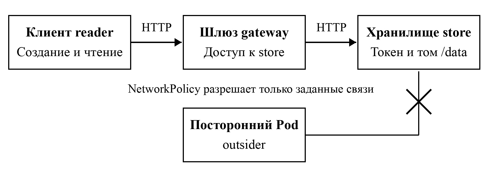

Здесь работает демонстрация в браузере: заметки сохраняются локально, а опыты с ограничениями выполняются моделью. Результаты настоящего запуска Docker и Kubernetes приведены в отдельном протоколе ниже.
Конфигурация
Сервис заметок
Клиент обращается к шлюзу, шлюз — к хранилищу. Лимиты приложения: 160 символов в заметке и 100 заметок. Каждая конфигурация имеет свой список.
Список готов к чтению.
| № | Текст |
|---|
Опыты с ограничениями
Выберите действие, затем сравните обычный и усиленный варианты. Это модель поведения выбранной конфигурации; новые контейнеры здесь не запускаются.
Результат выбранного действия появится здесь.
Сетевой опыт с outsider и контроль запуска Pod относятся к Kubernetes.
Параметры процесса из протокола
| Параметр | Значение |
|---|
Схема усиленной конфигурации Kubernetes

Проверки на настоящем стенде
Ниже сохранённый протокол запуска. Изменение заметок и конфигурации в этой демонстрации не меняет результаты измерений.
| № | Среда | Проверка | Результат |
|---|
Повторить опыт
Настоящий стенд запускается на Linux с Docker и Python. Порядок подготовки, ручные проверки и остановка описаны в гайде. После подготовки базового образа:
python3 scripts/deploy.py
python3 scripts/verify.py41/41 — число выполненных проверок, а не оценка безопасности в процентах. Эксперимент не включает поиск CVE, атаки на ядро и нагрузочные испытания.